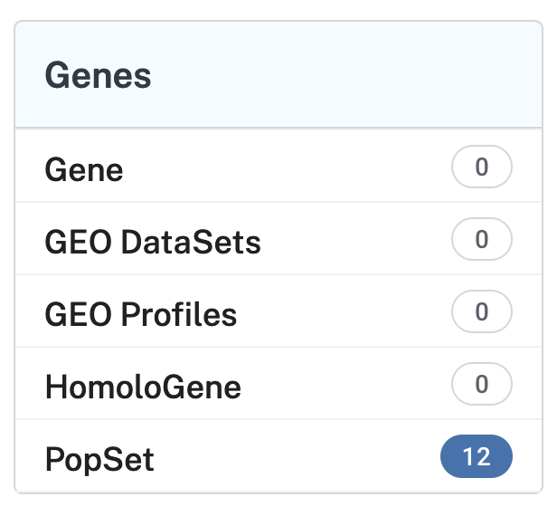
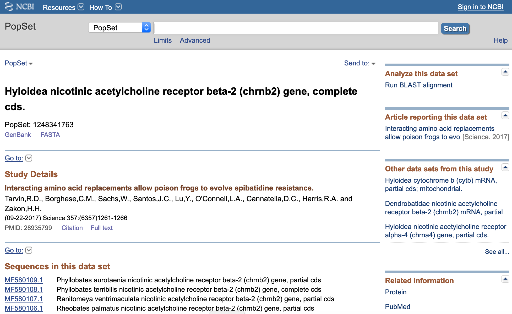
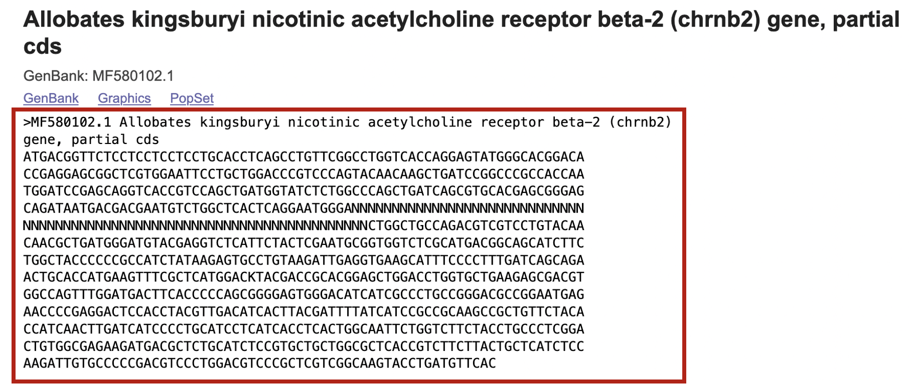
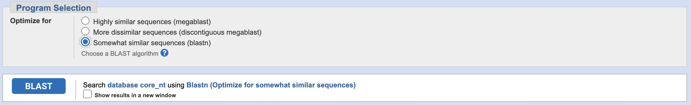

Session 5 – Getting Biological Data from Public Repositories
5.1 NCBI databases: GenBank and others
1) The NCBI (National Center for Biotechnology Information) is likely the ultimate source of public information that includes nucleotide sequences (including genomes, transcriptomes) and protein data. The NCBI goal, as is stated, is to advance science and health by providing access to biomedical and genomic information. Therefore, at some point during any your research (if that involves DNA, RNA or proteins), you will visit NCBI to retrieve or deposit molecular data. Likewise, you can access through the NCBI website an extensive literature repository named PubMed. This archive comprises more than 30 million citations for biomedical literature from MEDLINE, life science journals, and online books. Citations may include links to full-text content from PubMed Central and publisher web sites. During this class, we will focus on only few aspects of the NCBI and mostly relevant to retrieve sample data (or your own project data).
2) We can start by exploring data deposited from a poison frog Allobates kingsburyi. For this purpose, we type (or copy-and-paste) the name of this species on the search tab.
For this taxon, NCBI will return results found in 6 databases (1 error). In the Literature database, it will return 3 results in the PubMed Central and it will provide link to the PMC database that contains 3 publications that include this species name. In the Genes database, it will return 12 results in the PopSet and it will provide link to the PopSet database that contains a collection sequences associated to this species name. In the Proteins database, it will return 11 results in both the Identical Protein Groups and Protein. The latter will provide link to the Protein database that contains a collection 11 amino acid sequences associated to this species name. In the Genomes database, it will return 17 results in the Nucleotide and it will provide link to the Nucleotide database that contains a collection 17 nucleotide sequences associated to this species name. Likewise, Genomes database will also return 1 result in the Taxonomy and it will provide link to the Taxonomy database that contains the taxonomic link to the species that we are searching Allobates kingsburyi.
3) For a model system like Xenopus laevis, we will get far more results on our NCBI search. In this case, you will get an access to the genome assembly of this species (i.e., Xenopus_laevis_v2). Some other highlights include that this taxon has more than 43,660 associated publications, gene expression omnibus (GEO) has 184K entries, 149K protein entries, ~1.5M nucleotide entries, 2,249 SRA (NGS: sequence read archive) entries, and much more. This example provides the extent of the NCBI as central and extensive archive of biological information.
4) We will explore NCBI nucleotide database to understand how the R-package rentrez can retrieve data as data frames in the R environment.
We will collect some acetylcholine receptor CHRNB2 data of poison frogs. For this purpose, we need to retrieve the NCBI accession numbers. Each of these is a unique identifier for a sequence record and it applies to the complete record. These ID numbers are usually a combination of a letter(s) and numbers. Versions on these accession numbers are indicated by a number after a period, e.g., MF580102.1 will be version one of this entry.
For our example taxon, we first search Allobates kingsburyi on the NCBI search tab.
Next, we click on PopSet under the Genes menu.

This will take us to a collection of studies that include sequences of our target species Allobates kingsburyi. We are interested on Hyloidea nicotinic acetylcholine receptor beta-2 (chrnb2) gene, complete cds.

This is a phylogenetic study that includes 30 sequences of mostly frogs that include sequences of Allobates kingsburyi. We will click on the link to get the individual accession numbers and information on the associated publication.

Notice that the PopSet number of our focal study is 1248341763. However, we can copy single accession numbers (e.g., MF580109.1, MF580108.1, MF580107.1, etc) and can be used to download individually when we use the R-package rentrez. Likewise, you can get the fasta sequences by clickling on the FASTA link.

If you selected to see on the browser the FASTA sequences. You can copy and paste the output text in a file to import these sequences into R at a later time.

5.2 Accessing NCBI within R: rentrez
5) The above approach could be tedious and depended on lots of copy-and-paste actions. However, this can be streamlined using rentrez as long as you know what accession numbers you want to download.
We will proceed to get all the sequences associated to the corresponding poison frog PopSet 1248341763. For this purpose, we start by installing (if necesseray) or load rentrez in to the R environment.
## We have downloaded this R-package before, so you just need to load it in the R environment.
library(rentrez)
## We define our working folder, where we can download our retrieved sequences -- THIS IS EXCLUSIVE FOR YOUR COMPUTER AND IT IS NOT THE PATH SHOWN BELOW
setwd("~/Desktop/Teach_R/class_pages_reference/bioinformatics_gitbook_1/my_working_directory")Second, we can get an idea of the databases that rentrez can access from the NCBI using the EUtils API. As mentioned on 1), the NCBI provides extensive documentation for each of their databases. The information about these databases can be easily accessed using the function entrez_dbs() of rentrez.
entrez_dbs()
# [1] "pubmed" "protein" "nuccore" "ipg" "nucleotide" "structure"
# [7] "genome" "annotinfo" "assembly" "bioproject" "biosample" "blastdbinfo"
#[13] "books" "cdd" "clinvar" "gap" "gapplus" "grasp"
#[19] "dbvar" "gene" "gds" "geoprofiles" "homologene" "medgen"
#[25] "mesh" "ncbisearch" "nlmcatalog" "omim" "orgtrack" "pmc"
#[31] "popset" "proteinclusters" "pcassay" "protfam" "biosystems" "pccompound"
#[37] "pcsubstance" "seqannot" "snp" "sra" "taxonomy" "biocollections"
#[43] "gtr"We can access at least 43 databases. To download the acetylcholine receptor dataset, we know that this is a PopSet with a accession number 1248341763. We notice that this database is present as "popset" is an output of entrez_dbs() . Moreover, we can explore this database with three functions of rentrez: entrez_db_summary(), entrez_db_searchable() and entrez_db_links().
# Brief description of what the database is
entrez_db_summary("popset")
#DbName: popset
#MenuName: PopSet
#Description: PopSet sequence record
#DbBuild: Build210116-1232m.1
#Count: 356706
#LastUpdate: 2021/01/16 14:57
# Set of search terms that can used with this database
entrez_db_searchable("popset")
#Searchable fields for database 'popset'
# ALL All terms from all searchable fields
# UID Unique number assigned to each sequence
# FILT Limits the records
# WORD Free text associated with record
# TITL Words in definition line
# KYWD Nonstandardized terms provided by submitter
# AUTH Author(s) of publication
# JOUR Journal abbreviation of publication
# VOL Volume number of publication
# ISS Issue number of publication
# PAGE Page number(s) of publication
# ORGN Scientific and common names of organism, and all higher levels of taxonomy
# ACCN Accession number of sequence
# PACC Does not include retired secondary accessions
# GENE Name of gene associated with sequence
# PROT Name of protein associated with sequence
# ECNO EC number for enzyme or CAS registry number
# PDAT Date sequence added to GenBank
# MDAT Date of last update
# SUBS CAS chemical name or MEDLINE Substance Name
# PROP Classification by source qualifiers and molecule type
# SQID String identifier for sequence
# GPRJ BioProject
# FKEY Feature annotated on sequence
# PCNT Number of proteins in the set
# NCNT Number of nucleotides in the set
# STRN Strain
# ISOL Isolate
# CULT Cultivar
# BRD Breed
# Set of databases that might contain linked records
entrez_db_links("popset")
#Databases with linked records for database 'popset'
#[1] biocollections bioproject nuccore pmc popset protein pubmed
#[8] taxonomy We have the required information to fetch the PopSet 1248341763 in the fasta format. For that purpose we use the function entrez_fetch().
acetylcholine_receptor_data <- entrez_fetch(db = "popset",
id = 1248341763,
rettype = "fasta")
acetylcholine_receptor_data
#[1] ">MF580080.1 Espadarana callistomma nicotinic acetylcholine receptor beta-2 (chrnb2) gene, complete cds\nATGACGGTTCTCCTC..."Finally, we can save this as a character vector in a text file that will exactly as we did in 4) using the function write().
name_of_file <- paste0("acetylcholine_receptor_popset_1248341763.txt")
name_of_file
#[1] "acetylcholine_receptor_popset_1248341763.txt"
write(acetylcholine_receptor_data, file = name_of_file)6) It is important to reiterate that rentrez can get us more information associated to our focal dataset: PopSet 1248341763. Here are some interesting explorations on this accession number.
We can get the associated data link to the PopSet 1248341763. Using the function entrez_link()
my_popset_links <- entrez_link(dbfrom='popset', id=1248341763, db='all')
str(my_popset_links)
#List of 2
#$ links:List of 7
# ..$ popset_nuccore : chr [1:30] "1248341821" "1248341819" "1248341817" "1248341815" ...
# ..$ popset_pmc : chr "5834227"
# ..$ popset_popset : chr [1:3] "1248759970" "1248759962" "1248341823"
# ..$ popset_protein : chr [1:30] "1248341822" "1248341820" "1248341818" "1248341816" ...
# ..$ popset_pubmed : chr "28935799"
# ..$ popset_taxonomy : chr [1:63] "2648769" "2483034" "2023954" "1004470" ...
# ..$ popset_taxonomy_tree: chr [1:63] "2648769" "2483034" "2023954" "1004470" ...
# ..- attr(*, "class")= chr [1:2] "elink_classic" "list"
#$ file :Classes 'XMLInternalElementNode', 'XMLInternalNode', 'XMLAbstractNode' <externalptr>
#- attr(*, "content")= chr " $links: IDs for linked records from NCBI\n "
#- attr(*, "class")= chr [1:2] "elink" "list"We see that the literature database popset_pmc has one entry and this is likely the publication associated with PopSet 1248341763. We can retrieve this information with the function entrez_fetch(). In this case, we will use a complex notation to retrieve a pmc dataset as my_popset_links$links$popset_pmc. This indicates that with the list named my_popset_links, we want to retrieve the list named links and the element named popset_pmc. When ready, we will use the function entrez_fetch() with the return format as rettype="native".
my_popset_links$links$popset_pmc
pmc_ids <- my_popset_links$links$popset_pmc
pmc_ids
#[1] "5834227"
my_literature <- entrez_fetch(db = "pmc", id = pmc_ids, rettype="native")
my_literature
#[1] "1: Interacting Amino Acid Replacements Allow Poison Frogs to Evolve Epibatidine Resistance\nRebecca D. Tarvin, Cecilia M. Borghese, Wiebke Sachs, Juan C. Santos, Ying Lu, Lauren A. O’Connell, David C. Cannatella, R. Adron Harris, Harold H. Zakon\nScience. Author manuscript; available in PMC 2018 Mar 22.Published in final edited form as: Science. 2017 Sep 22; 357(6357): 1261–1266. doi: 10.1126/science.aan5061\nPMCID: PMC5834227\n\n"
cat(my_literature)
#1: Interacting Amino Acid Replacements Allow Poison Frogs to Evolve Epibatidine Resistance
#Rebecca D. Tarvin, Cecilia M. Borghese, Wiebke Sachs, Juan C. Santos, Ying Lu, Lauren A. O’Connell, David C. Cannatella, R. Adron Harris, Harold H. Zakon
#Science. Author manuscript; available in PMC 2018 Mar 22.Published in final edited form as: Science. 2017 Sep 22; 357(6357): 1261–1266. doi: 10.1126/science.aan5061
#PMCID: PMC5834227We can also retrieve the amino acid sequence associated with the sequences in our PopSet 1248341763 and save it in a text file using fasta format.
my_popset_links$links$popset_protein
protein_ids <- my_popset_links$links$popset_protein
protein_ids
#[[1] "1248341822" "1248341820" "1248341818" "1248341816" "1248341814" "1248341812" "1248341810" "1248341808"
# [9] "1248341806" "1248341804" "1248341802" "1248341800" "1248341798" "1248341796" "1248341794" "1248341792"
#[17] "1248341790" "1248341788" "1248341786" "1248341784" "1248341782" "1248341780" "1248341778" "1248341776"
#[25] "1248341774" "1248341772" "1248341770" "1248341768" "1248341766" "1248341764"
my_popset_protein <- entrez_fetch(db = "protein", id = protein_ids, rettype="fasta")
my_popset_protein
#[1] ">ATG31811.1 nicotinic acetylcholine receptor beta-2, partial [Phyllobates aurotaenia]\nADGMYEVSFYSNAVVSHDGSIFWLPP..."
name_of_file <- paste0("acetylcholine_receptor_popset_1248341763_protein.txt")
name_of_file
#[1] "acetylcholine_receptor_popset_1248341763_protein.txt"
write(my_popset_protein, file = name_of_file)7) To import these data back to R , we need the path to the files that contain the data using the R-package Biostrings.
We can import the nucleotide sequences as DNAstrings.
## you might have already installed the library Biostrings
library(Biostrings)
## get the path to the file with the nucleotide sequences -- THIS IS EXCLUSIVE FOR YOUR COMPUTER AND IT IS NOT THE PATH SHOWN BELOW
my_popset_as_dna_stringset <- readDNAStringSet(filepath = "~/Desktop/Teach_R/class_pages_reference/bioinformatics_gitbook_1/my_working_directory/acetylcholine_receptor_popset_1248341763.txt",
format = "fasta")
my_popset_as_dna_stringset
# A DNAStringSet instance of length 30
# width seq names
# [1] 1506 ATGACGGTTCTCCTCNNNNNNNNNNNNCTCGGTCTGCTCGGCC...ACGTTATTACAGTTGAACCATGCAGCTCCCGCCTCCAACTAA MF580080.1 Espada...
# [2] 1506 ATGACGGCTCTCCTCCTCGTCCTGCACCTCAGCCTGATCGGCC...ACGTTACTACAGCTCAACCACGCGATTCCTGCCTCCAACTAG MF580081.1 Boana ...
# [3] 1506 ATGACGGTTCTCCTCCTCGTCCTGCACCTGAGCCTGCTCGGCC...ACGTTACTGCAGCTCAACCACGCGGCTCCCGCCTCCAACTGA MF580082.1 Incili...
# [4] 1515 ATGACGGTTCTCCTCCTCGTCCTGCACCTCAGCCTGCTCGGCC...CAGCTGAACCACGGGGCTCCCGCCTCCAACTAAAGGGGCGCC MF580083.1 Hyloxa...
# [5] 1506 ATGACGGTTCTCCTCCTCGTCCTGCACCTGAGCCTGCTCGGCC...ACGTTACTGCAGCTCAACCACGCAGCTCCCGCCTCCAACTGA MF580084.1 Atelop...
# ... ... ...
#[26] 1506 ATGGCGGCTCTCCTCNNNCTCCTACACCTCGGCCTGCTCGGCA...ACGTTACTGCAGCTGAACCCCGCAGCTCCCGCCTCTAAGTGA MF580105.1 Gastro...
#[27] 134 GCTGATGGGATGTACGAGGTCTCCTTCTACTCCAACGCGGTGG...CGCCTGTAAGATCGAGGTGAAGCACTTTCCGTTCGACCAGCA MF580106.1 Rheoba...
#[28] 203 GCTGATGGGATGTATGAGGTCTCCTTCTACTCTAACGCGGTGG...GACTTATGACCGCACTGAGCTGGACCTGGTGCTGAAGAGTGA MF580107.1 Ranito...
#[29] 1506 ATGACGGCTCTCCTCCTCGTCCTGCACCTCAGCCTGCTCGGCC...ACGTTAATACAGCTGAACCATGGGACCCCCGCCTCCAACTAA MF580108.1 Phyllo...
#[30] 195 GCTGATGGGATGTATGAGGTCTCCTTCTACTCTAACGCGGTGG...CGCTCGTGGACTTATGACCGCACCGAGCTGGACCTGGTGCTG MF580109.1 Phyllo...We can also import the amino acid sequences as AAstrings.
# get the path to the file with the amino acid sequences -- THIS IS EXCLUSIVE FOR YOUR COMPUTER AND IT IS NOT THE PATH SHOWN BELOW
my_popset_as_aa_stringset <- readAAStringSet(filepath = "~/Desktop/Teach_R/class_pages_reference/bioinformatics_gitbook_1/my_working_directory/acetylcholine_receptor_popset_1248341763_protein.txt",
format = "fasta")
my_popset_as_aa_stringset
# A AAStringSet instance of length 30
# width seq names
# [1] 65 ADGMYEVSFYSNAVVSHDGSIFWLPPAIYKSACKIEVKHFPFDQQNCTMKFRSWTYDRTELDLVL ATG31811.1 nicoti...
# [2] 501 MTALLLVLHLSLLGLVTRSMGTDTEERLVEFLLDPSRYNKLIR...LFLWIFVFVCVFGTIGMFLQPLFQNYTSNTLIQLNHGTPASN ATG31810.1 nicoti...
# [3] 67 ADGMYEVSFYSNAVVSHDGSIFWLPPAIYKSACKIEVKHFPFDQQNCTMKFRSWTYDRTELDLVLKS ATG31809.1 nicoti...
# [4] 44 ADGMYEVSFYSNAVVSHDGSIFWLPPAIYKSACKIEVKHFPFDQ ATG31808.1 nicoti...
# [5] 501 MAALLXLLHLGLLGIVSRCLCTDTEERLVEFLLDPSRYNKLIR...LFLWIFIFVCVFGTIGMFLQPLFQNYTTNTLLQLNPAAPASK ATG31807.1 nicoti...
# ... ... ...
#[26] 501 MTVLLLVLHLSLLGLVTRSLGTDTEERLVEFLLDPSRYNKLIR...LFLWVFVFVCVFGTIGMFLQPLFQNYTSNTLLQLNHAAPASN ATG31786.1 nicoti...
#[27] 501 MTVLLLVLHLSLLGLVTRSMGTDTEERLVEFLLDPSRYNKLIR...LFLWIFVFVCVFGTIGMFLQPLFQNYTTNTLLQLNHGAPASN ATG31785.1 nicoti...
#[28] 501 MTVLLLVLHLSLLGLVTRSLGTDTEERLVEFLLDPSRYNKLIR...LFLWVFVFVCVFGTIGMFLQPLFQNYTSNTLLQLNHAAPASN ATG31784.1 nicoti...
#[29] 501 MTALLLVLHLSLIGLVTRILGTDTEERLVEFLLDSSRYNKLIR...LFLWIFVFVCVFGTIGMFLQPLFQNYTTNTLLQLNHAIPASN ATG31783.1 nicoti...
#[30] 501 MTVLLXXXXLGLLGLVTRCLXTDTEERLVEFLLDSSRYNKLIR...LFLWIFVFVCVFGTIGMFLQPLFQNYTTNTLLQLNHAAPASN ATG31782.1 nicoti...5.3 Retrieving PubMed references
We can use rentrez to retrive publication infomration relevant to a term (i.e., text argument) that you can use for citations or references. The main source of such information is PubMed and it claims to include >30 million citations for biomedical literature from MEDLINE, life science journals, and online books. Likewise, such citations may include links to full text content from PubMed Central and publisher web sites. However, from R, you will be able to access the citation, abstract and other identifiers that you can use later on PubMed website.
8) we can use publications relevant to a term of interest, for example, an genus of frogs Ameerega using the following procedure.
We can retrieve the results in the Medline format as follows.
## make sure that 'rentrez' is loaded
require(rentrez)
## retrieve IDs from NCBI
genus_publications_IDs <- entrez_search(db="pubmed", term="Ameerega")
str(genus_publications_IDs)
#List of 5
# $ ids : chr [1:17] "32230685" "31716726" "31586688" "31125660" ...
# $ count : int 17
# $ retmax : int 17
# $ QueryTranslation: chr "Ameerega[All Fields]"
# $ file :Classes 'XMLInternalDocument', 'XMLAbstractDocument' <externalptr>
# - attr(*, "class")= chr [1:2] "esearch" "list"
genus_publications_medline <- entrez_fetch(db="pubmed", id=genus_publications_IDs$ids, rettype="medline")
cat(genus_publications_medline)
#PMID- 37889647
#OWN - NLM
#STAT- MEDLINE
#DCOM- 20231129
#LR - 20231227
#IS - 1521-6950 (Electronic)
#IS - 1093-7404 (Linking)
#VI - 27
#IP - 1
#DP - 2024 Jan 2
#TI - Bioactive alkaloids from the venom of Dendrobatoidea Cope, 1865: a scoping
# review.
#PG - 1-20
#LID - 10.1080/10937404.2023.2270408 [doi]
#AB - Bioactive compounds derived from secondary metabolism in animals have refined
# selectivity and potency for certain biological targets. The superfamily
# Dendrobatoidea is adapted to the dietary sequestration and secretion of toxic
# alkaloids, which play a role in several biological activities, and thus serve as
# a potential source for pharmacological and biotechnological applications. This
# article constitutes a scoping review to understand the trends in experimental
# research involving bioactive alkaloids derived from Dendrobatoidea based upon
# scientometric approaches. Forty-eight (48) publications were found in 30 journals
# in the period of 60 years, between 1962 and 2022. More than 23 structural classes
# of alkaloids were cited, with 27.63% for batrachotoxins, 13.64% for pyridinics,
# with an emphasis on epibatidine, 16.36% for pumiliotoxins, and 11.82% for
# histrionicotoxins. These tests included in vivo (54.9%), in vitro (39.4%), and in
# silico simulations (5.6%). Most compounds (54.8%) were isolated from skin
# extracts, whereas the remainder were obtained through molecular synthesis.
# Thirteen main biological activities were identified, including
# acetylcholinesterase inhibitors (27.59%), sodium channel inhibitors (12.07%),
# cardiac (12.07%), analgesic (8.62%), and neuromuscular effects (8.62%). The
# substances were cited as being of natural origin in the "Dendrobatidae" family,
# genus "Phyllobates," "Dendrobates," and seven species: Epipedobates tricolor,
# Phyllobates aurotaenia, Oophaga histrionica, Oophaga pumilio, Phyllobates
# terribilis, Epipedobates anthonyi, and Ameerega flavopicta. To date, only a few
# biological activities have been experimentally tested; hence, further studies on
# the bioprospecting of animal compounds and ecological approaches are needed.
#FAU - Dos Santos Arraes, Debora Regina
#AU - Dos Santos Arraes DR
#AD - Zoology Laboratory, Amapa State University, Macapa, Amapa, Brazil.
#FAU - Rodrigues, Alex Bruno Lobato
#AU - Rodrigues ABL
#AD - Laboratory of Analytical Chemistry, Federal University of Amapa, Macapa, Amapa,
# Brazil.
#FAU - Sanches, Patrick Ribeiro
#AU - Sanches PR
#AD - Herpetology Laboratory, Federal University of Amapa, Macapa, Amapa, Brazil.
#FAU - Costa Campos, Carlos Eduardo
#AU - Costa Campos CE
#AD - Herpetology Laboratory, Federal University of Amapa, Macapa, Amapa, Brazil.
#FAU - Moreira da Silva de Almeida, Sheylla Susan
#AU - Moreira da Silva de Almeida SS
#AD - Laboratory of Pharmacognosy and Phytochemistry, Federal University of Amapa,
# Macapa, Amapa, Brazil.
#FAU - Reis Ferreira Lima, Janaina
#AU - Reis Ferreira Lima J
#AD - Herpetology Laboratory, Institute of Scientific and Technological Research of the
# State of Amapa, Macapa, Amapa, Brazil.
#FAU - Dias Lima, Jucivaldo
#AU - Dias Lima J
#AD - Herpetology Laboratory, Institute of Scientific and Technological Research of the
# State of Amapa, Macapa, Amapa, Brazil.
#FAU - da Silva, Gabriel Araujo
#AU - da Silva GA
#AD - Laboratory of Organic Chemistry, Amapa State University, Macapa, Amapa, Brazil.
#LA - eng
#PT - Journal Article
#PT - Research Support, Non-U.S. Gov't
#PT - Review
#DEP - 20231128
#PL - England
#TA - J Toxicol Environ Health B Crit Rev
#JT - Journal of toxicology and environmental health. Part B, Critical reviews
#JID - 9802627
#RN - 0 (Venoms)
#RN - EC 3.1.1.7 (Acetylcholinesterase)
#RN - 0 (Batrachotoxins)
#RN - 0 (Alkaloids)
#SB - IM
#MH - Animals
#MH - *Venoms
#MH - Acetylcholinesterase
#MH - Anura/metabolism
#MH - Batrachotoxins/chemistry
#MH - *Alkaloids/chemistry/metabolism
#OTO - NOTNLM
#OT - Biodiversity
#OT - biotechnological
#OT - poison frogs
#OT - secondary metabolites
#OT - toxins
#EDAT- 2023/10/27 18:42
#MHDA- 2023/11/29 06:42
#CRDT- 2023/10/27 12:24
#PHST- 2023/11/29 06:42 [medline]
#PHST- 2023/10/27 18:42 [pubmed]
#PHST- 2023/10/27 12:24 [entrez]
#AID - 10.1080/10937404.2023.2270408 [doi]
#PST - ppublish
#SO - J Toxicol Environ Health B Crit Rev. 2024 Jan 2;27(1):1-20. doi:
# 10.1080/10937404.2023.2270408. Epub 2023 Nov 28.
#...We can save these publication refereces into a text file in your working directory.
# this is exclusive to your OWN COMPUTER change it accordingly
setwd("~/Desktop/Teach_R/my_working_directory")
write(genus_publications_medline, "my_genus_publications_as_medline_format.txt")We can retrieve the results in the abstract format as follows.
## make sure that 'rentrez' is loaded
require(rentrez)
## retrieve IDs from NCBI
genus_publications_IDs <- entrez_search(db="pubmed", term="Ameerega")
str(genus_publications_IDs)
#List of 5
# $ ids : chr [1:17] "32230685" "31716726" "31586688" "31125660" ...
# $ count : int 17
# $ retmax : int 17
# $ QueryTranslation: chr "Ameerega[All Fields]"
# $ file :Classes 'XMLInternalDocument', 'XMLAbstractDocument' <externalptr>
# - attr(*, "class")= chr [1:2] "esearch" "list"
genus_publications_abstract <- entrez_fetch(db="pubmed", id=genus_publications_IDs$ids, rettype="abstract")
cat(genus_publications_abstract)
#J Toxicol Environ Health B Crit Rev. 2024 Jan 2;27(1):1-20. doi:
#10.1080/10937404.2023.2270408. Epub 2023 Nov 28.
#
#Bioactive alkaloids from the venom of Dendrobatoidea Cope, 1865: a scoping
#review.
#
#Dos Santos Arraes DR(1), Rodrigues ABL(2), Sanches PR(3), Costa Campos CE(3),
#Moreira da Silva de Almeida SS(4), Reis Ferreira Lima J(5), Dias Lima J(5), da
#Silva GA(6).
#
#Author information:
#(1)Zoology Laboratory, Amapá State University, Macapá, Amapá, Brazil.
#(2)Laboratory of Analytical Chemistry, Federal University of Amapá, Macapá,
#Amapá, Brazil.
#(3)Herpetology Laboratory, Federal University of Amapá, Macapá, Amapá, Brazil.
#(4)Laboratory of Pharmacognosy and Phytochemistry, Federal University of Amapá,
#Macapá, Amapá, Brazil.
#(5)Herpetology Laboratory, Institute of Scientific and Technological Research of
#the State of Amapá, Macapá, Amapá, Brazil.
#(6)Laboratory of Organic Chemistry, Amapá State University, Macapá, Amapá,
#Brazil.
#
#Bioactive compounds derived from secondary metabolism in animals have refined
#selectivity and potency for certain biological targets. The superfamily
#Dendrobatoidea is adapted to the dietary sequestration and secretion of toxic
#alkaloids, which play a role in several biological activities, and thus serve as
#a potential source for pharmacological and biotechnological applications. This
#article constitutes a scoping review to understand the trends in experimental
#research involving bioactive alkaloids derived from Dendrobatoidea based upon
#scientometric approaches. Forty-eight (48) publications were found in 30
#journals in the period of 60 years, between 1962 and 2022. More than 23
#structural classes of alkaloids were cited, with 27.63% for batrachotoxins,
#13.64% for pyridinics, with an emphasis on epibatidine, 16.36% for
#pumiliotoxins, and 11.82% for histrionicotoxins. These tests included in vivo
#(54.9%), in vitro (39.4%), and in silico simulations (5.6%). Most compounds
#(54.8%) were isolated from skin extracts, whereas the remainder were obtained
#through molecular synthesis. Thirteen main biological activities were
#identified, including acetylcholinesterase inhibitors (27.59%), sodium channel
#inhibitors (12.07%), cardiac (12.07%), analgesic (8.62%), and neuromuscular
#effects (8.62%). The substances were cited as being of natural origin in the
#"Dendrobatidae" family, genus "Phyllobates," "Dendrobates," and seven species:
#Epipedobates tricolor, Phyllobates aurotaenia, Oophaga histrionica, Oophaga
#pumilio, Phyllobates terribilis, Epipedobates anthonyi, and Ameerega flavopicta.
#To date, only a few biological activities have been experimentally tested;
#hence, further studies on the bioprospecting of animal compounds and ecological
#approaches are needed.
#
#DOI: 10.1080/10937404.2023.2270408
#PMID: 37889647 [Indexed for MEDLINE]
#...We can save these publication refereces into a text file in your working directory.
# this is exclusive to your OWN COMPUTER change it accordingly
setwd("~/Desktop/Teach_R/my_working_directory")
write(genus_publications_abstract, "my_genus_publications_as_abstract_format.txt")5.4 Comparing sequences: BLAST
One of the most important tools of the NCBI is the Basic Local Alignment Search Tool (BLAST). This tool finds regions of local similarity between sequences by comparing nucleotide or protein sequences to sequence databases and calculates the statistical significance of matches. BLAST can be accessed form the NCBI website or link provided. It also has a friendly guide.
Here is a table from the reference manual that provide you with key features of the BLAST search pages in the “Basic BLAST” category guide.
| Search page | Query & database | Alignment | Programs & Description |
|---|---|---|---|
| nucleotide blast | nucleotide vs nucleotide | nucleotide | megablast: for sequence identification, intra-species comparison, discontiguous megablast: for cross-species comparison, searching with coding sequences; blastn: for searching with shorter queries, cross-species comparison |
| protein blast | protein vs protein | protein | blastp: general sequence identification and similarity searches; Quick BLASTP: with a kmer match to accelerate search speed for very similar proteins; DELTA-BLAST[3]: protein similarity search with higher sensitivity than blastp; PSI-BLAST: iterative search for position-specific score matrix (PSSM) to identify distant relatives for a protein family; PHI-BLAST: protein alignment with input pattern as anchor_constraint |
| blastx | nucleotide (translated) vs protein | protein | blastx: for identifying potential protein products encoded by a nucleotide query |
| tblastn | protein vs nucleotide (translated) | protein | tblastn: for identifying database sequences encoding proteins similar to the query |
| tblastx | nucleotide (translated) vs nucleotide (translated) | protein | tblastx: for identifying nucleotide sequences similar to the query based on their coding potential |
We will focus on nucleotide blast.
9) If you are interested in comparing a nucleotide query against the nucleotide reference collection. You can use [blastn] or standard nucleotide BLAST.
For a simple query, you usually start by copying and pasting the nucleotide sequence that you want to BLAST. We will use a short sequence of the MF580102.1 NCBI accession number of the nicotinic acetylcholine receptor beta-2 (chrnb2) from Allobates kingsburyi.
>MF580102.1 Allobates kingsburyi nicotinic acetylcholine receptor beta-2 (chrnb2) gene, partial cds
ATGACGGTTCTCCTCCTCCTCCTGCACCTCAGCCTGTTCGGCCTGGTCACCAGGAGTATGGGCACGGACA
CCGAGGAGCGGCTCGTGGAATTCCTGCTGGACCCGTCCCAGTACAACAAGCTGATCCGGCCCGCCACCAA
TGGATCCGAGCAGGTCACCGTCCAGCTGATGGTATCTCTGGCCCAGCTGATCAGCGTGCACGAGCGGGAG
CAGATAATGACGACGAATGTCTGGCTCACTCAGGAATGGGANNNNNNNNNNNNNNNNNNNNNNNNNNNNN
NNNNNNNNNNNNNNNNNNNNNNNNNNNNNNNNNNNNNNNNNNNCTGGCTGCCAGACGTCGTCCTGTACAA
CAACGCTGATGGGATGTACGAGGTCTCATTCTACTCGAATGCGGTGGTCTCGCATGACGGCAGCATCTTC
TGGCTACCCCCCGCCATCTATAAGAGTGCCTGTAAGATTGAGGTGAAGCATTTCCCCTTTGATCAGCAGA
ACTGCACCATGAAGTTTCGCTCATGGACKTACGACCGCACGGAGCTGGACCTGGTGCTGAAGAGCGACGT
GGCCAGTTTGGATGACTTCACCCCCAGCGGGGAGTGGGACATCATCGCCCTGCCGGGACGCCGGAATGAG
AACCCCGAGGACTCCACCTACGTTGACATCACTTACGATTTTATCATCCGCCGCAAGCCGCTGTTCTACA
CCATCAACTTGATCATCCCCTGCATCCTCATCACCTCACTGGCAATTCTGGTCTTCTACCTGCCCTCGGA
CTGTGGCGAGAAGATGACGCTCTGCATCTCCGTGCTGCTGGCGCTCACCGTCTTCTTACTGCTCATCTCC
AAGATTGTGCCCCCGACGTCCCTGGACGTCCCGCTCGTCGGCAAGTACCTGATGTTCACNotice that you can paste multiple sequences in fasta format.
10) You have several options under Choose Search Set.
The first set is to choose a database and the default is Nucleotide collection (nr/nt). However, you have other 15 databases to choose. In most cases, the Nucleotide collection (nr/nt) is the best option. However, the others are useful if looking in reference collections (e.g., refseq_select, refseq_rna, refseq_representative_genomes, etc.) Other dataset are more ameneable for genomic/transcriptomic datasets (e.g., wgs, SRA, TSA) and in most cases they lack annotation (i.e., gene soruce is unknown).
Next, you can select the organism taxonomic level that you want to restrict you search. If left blank, it will all references in that database. The lower the taxonomic level (e.g., genus versus family), the less sequences to compare the faster the BLAST will run. In this example, we will select the order Anura (all frogs.)
In the program selection, the default is highly similar sequences (megablast). This is the strictest, this approach is intended for comparing a query to closely related sequences and works best if the target percent identity is 95% or more but is very fast. The option somewhat similar sequences (blastn) is slow but allows a word-size down to seven bases (you can recover more matches). Likewise, you can modify the General Parameters from its default values. In most cases before running BLAST, you leave them in their default. For our example, we will select blastn with other parameters in default.

Then, we click BLAST.
11) After you submit your query, you might need to wait for seconds to minutes. This time is not consistent and depend on the NCBI servers. Here is the output of our search.
Some key information is provided here. The Descriptions will provided the name of the submission that matched your search. In this case, Allobates kingsburyi nicotinic acetylcholine receptor beta-2 (chrnb2) gene, partial cds is a perfect match because we searched this exact sequence. The matched are presented in order from the top as closets matches to the bottom as the worst. The three most important numbers that guide you in your reading of the results are: Query Cover – numbers close to 100% are preferred and 91% indicates that this percentage of the sequence in the query covered the sequence in description; E value – numbers close to 0 are preferred and in our case was 0 so it is an extremely close match and Per. Inden – numbers close to 100% are preferred and in our case is 100% or a perfect match.
Other relevant information is Accession or the number in the NCBI that you can retrieve using from R such as using rentrez.
12) If you click on any of the matches or the Alignments tab, the browser will take you to the alignment. In there, you can find nucleotide sites that matched (i.e., Identities) or not.
The reading frame of the query as a Strand (e.g., Plus/Plus is standard; if Plus/Minus one needs to reverse and complement)
You can also click on the GenBank link to take you to the accession entry of the reference. In this case, MF580103.1 that is the sequence of Allobates zaparo.
13) From each alignment block, you can get a summary of how well the subject sequence matches your query. This includes the name of species, gene identity, and other information such if the subject sequence is complete (e.g., complete cds). It will also include the sequence ID or NCBI accession number and its length. On the alignment top row, you see the max score (‘Score’) and expect value (‘Expect’), a high score and very low expected values suggest a strong similarity to the query. The ‘Identities’ indicate the number of identical bases between the query and the subject sequences. The ‘Gaps’ indicate the number of gaps and their % in the alignment over the entire length of the matching section of the query versus the subject sequence alignment. The ‘Strand’ provides the orientation of the query sequence relative to the subject sequence. Such as Plus/Plus (both 3 -> 5), Minus/Minus (both 5 -> 3), and variations between these. Sometimes, you will see lowercase letters in the alignment (e.g., ‘ttttttttt’) these indicate low complexity sequences with lots of the same type of bases in the query sequence.
14) If you click on Graphic Summary this will show you the sequence alignments as colored lines that correspond to NCBI database matches to our query sequence. The light blue bar will indicate the nucleotide/amino acid position from 1 to the end. The matching sequences will present different colors based on the alignment scores to identify local regions of sequence similarity with the query sequence. Higher values (e.g., >= 200) would indicate higher similarity. You can notice that some aligned regions can be separated and connected by a thin grey line these are multiple alignment blocks. You can mouse over an alignment sequence to reveal the sequence title as in the NCBI database. Clicking on a line (i.e., alignment) will displays a box with more details about such alignment and a link to the sequence itself in the Alignments section of the report.
15) If you click on Taxonomy you will get a summary of the species source of the subject sequences (i.e., BLAST matches), including their higher taxonomic classification (e.g., family, class, order, etc).
5.5 Other databases: UniProt
16) Other source of important sequence information is the UniProt database, which provides high-quality and freely accessible protein sequences and functional information.
These sequences can be retrieved by their entry number using the R-package UniprotR.
#install and load the package
install.packages("UniprotR")
library(UniprotR)We can retrieve UniProt sequences of the same gene that presented before the acetylcholine receptor CHRNB2. For this purpose, we need to retrieve the list of entry numbers in the UniProt databases. For example, we will retrieve CHRNB2 from the following taxa: human P17787, mouse Q9ERK7, chicken P09484, Bos taurus A0A3Q1MJN8, Danio rerio E7F4S7, Coelacanth H3B5V5, Anolis H9GMJ0, Xenopus tropicalis A4IIS6.
We will use the function GetSequences().
other_CHRNB2_ids <- c("P17787", "Q9ERK7", "P09484", "A0A3Q1MJN8", "E7F4S7", "H3B5V5", "H9GMJ0", "A4IIS6")
other_CHRNB2_raw <- UniprotR::GetSequences(other_CHRNB2_ids)
class(other_CHRNB2_raw)
#[1] "data.frame"
# this is a complex data structure and we need the sequences that can be later process as AAStringSet
str(other_CHRNB2_raw)
#'data.frame': 8 obs. of 23 variables:
#$ Fragment : logi NA NA NA NA NA NA ...
#$ Gene.encoded.by : logi NA NA NA NA NA NA ...
#$ Alternative.products..isoforms.: logi NA NA NA NA NA NA ...
#$ Erroneous.gene.model.prediction: logi NA NA NA NA NA NA ...
#$ Erroneous.initiation : logi NA NA NA NA NA NA ...
#$ Erroneous.termination : logi NA NA NA NA NA NA ...
#$ Erroneous.translation : logi NA NA NA NA NA NA ...
#$ Frameshift : logi NA NA NA NA NA NA ...
#$ Mass.spectrometry : logi NA NA NA NA NA NA ...
#$ Polymorphism : logi NA NA NA NA NA NA ...
#$ RNA.editing : logi NA NA NA NA NA NA ...
#$ Sequence.caution : logi NA NA NA NA NA NA ...
#$ Length : int 502 501 491 509 543 478 509 499
#$ Mass : Factor w/ 8 levels "57,019","57,113",..: 1 2 3 4 5 6 7 8
#$ Sequence : Factor w/ 8 levels "MARRCGPVALLLGFGLLRLCSGVWGTDTEERLVEHLLDPSRYNKLIRPATNGSELVTVQLMVSLAQLISVHEREQIMTTNVWLTQEWEDYRLTWKPEEFDNMKKVRLPSKH"| __truncated__,..: 1 2 3 4 5 6 7 8
#$ Alternative.sequence : logi NA NA NA NA NA NA ...
#$ Natural.variant : Factor w/ 1 level "VARIANT 287; /note=V -> L (in ENFL3; dbSNP:rs74315291); /evidence=ECO:0000269|PubMed:11062464; /id=VAR_01271"| __truncated__: 1 NA NA NA NA NA NA NA
#$ Non.adjacent.residues : logi NA NA NA NA NA NA ...
#$ Non.standard.residue : logi NA NA NA NA NA NA ...
#$ Non.terminal.residue : logi NA NA NA NA NA NA ...
#$ Sequence.conflict : Factor w/ 2 levels "CONFLICT 26; /note=T -> A (in Ref. 4; CAA05108); /evidence=ECO:0000305; CONFLICT 426; /note=E -> A (in Ref. "| __truncated__,..: 1 2 NA NA NA NA NA NA
#$ Sequence.uncertainty : logi NA NA NA NA NA NA ...
#$ Version..sequence. : int 1 2 1 1 1 1 1 1We notice that from the above data frame, we only need the $ Sequence slot. However, this is a factor element and has to be transformed into vector. We will proceed as follows.
other_CHRNB2_aa <- other_CHRNB2_raw$Sequence
class(other_CHRNB2_aa)
#[1] "factor"
# we transform to a character vector
other_CHRNB2_aa <- as.character(other_CHRNB2_aa)
class(other_CHRNB2_aa)
other_CHRNB2_aa
#[1] "MARRCGPVALLLGFGLLRLCSGVWGTDTEERLVEHLLDPSRYNKLIRPATNGSELVTVQLMVSLAQLISVHEREQIMTTNVWLTQEWEDYRLTWKPEEFDNMKKVRL..."
#[2] "MARCSNSMALLFSFGLLWLCSGVLGTDTEERLVEHLLDPSRYNKLIRPATNGSELVTVQLMVSLAQLISVHEREQIMTTNVWLTQEWEDYRLTWKPEDFDNMKKVRL..."
#[3] "MALLRVLCLLAALRRSLCTDTEERLVEYLLDPTRYNKLIRPATNGSQLVTVQLMVSLAQLISVHEREQIMTTNVWLTQEWEDYRLTWKPEDFDNMKKVRLPSKHIWL..." We notice that the and UniProt entries are not associated to the sequences and can get these names form the row names from the other_CHRNB2_raw data frame. By assigning such names, we can improve our ability to identify the source of the sequence by adding organism and the starting fasta character >. We can also prepare this object to build a fasta output by adding the corresponding new line character \n.
# get a names character vector
names_of_other_CHRNB2_aa <- rownames(other_CHRNB2_raw)
names_of_other_CHRNB2_aa
#[1] "P17787" "Q9ERK7" "P09484" "A0A3Q1MJN8" "E7F4S7" "H3B5V5" "H9GMJ0" "A4IIS6"
names_of_organism <- c("human", "mouse", "chicken", "Bos_taurus", "Danio_rerio", "coelacanth", "Anolis", "Xenopus_tropicalis")
# we can combine names
final_names <- character()
for(i in 1:length(names_of_organism)) { final_names[i] <- paste0(">",names_of_organism[i],"_",names_of_other_CHRNB2_aa[i],"\n")}
final_names
#[1] ">human_P17787\n" ">mouse_Q9ERK7\n" ">chicken_P09484\n"
#[4] ">Bos_taurus_A0A3Q1MJN8\n" ">Danio_rerio_E7F4S7\n" ">coelacanth_H3B5V5\n"
#[7] ">Anolis_H9GMJ0\n" ">Xenopus_tropicalis_A4IIS6\n"We can build the final FASTA output to be written in a text file. By collapsing both vectors with a new line character \n.
end_uniprot_fasta <- paste0(final_names,other_CHRNB2_aa, collapse = "\n")
end_uniprot_fasta
#[1] ">human_P17787\nMARRCGPVALLLGFGLLRLCSGVWGTDTEERLVEHLLDPSRYNKLIRPATNGSELVTVQLMVSLAQLISVHEREQIMTTNVWLTQEWEDYRLTWKPEEFDNMKKVRL..
cat(end_uniprot_fasta)
#>human_P17787
#MARRCGPVALLLGFGLLRLCSGVWGTDTEERLVEHLLDPSRYNKLIRPATNGSELVTVQLMVSLAQLISVHEREQIMTTNVWLTQEWEDYRLTWKPEEFDNMKKVRLPSKHIWLPDVVLYNNADGMY...
#>mouse_Q9ERK7
#MARCSNSMALLFSFGLLWLCSGVLGTDTEERLVEHLLDPSRYNKLIRPATNGSELVTVQLMVSLAQLISVHEREQIMTTNVWLTQEWEDYRLTWKPEDFDNMKKVRLPSKHIWLPDVVLYNNADGMY...
#>chicken_P09484
#MALLRVLCLLAALRRSLCTDTEERLVEYLLDPTRYNKLIRPATNGSQLVTVQLMVSLAQLISVHEREQIMTTNVWLTQEWEDYRLTWKPEDFDNMKKVRLPSKHIWLPDVVLYNNADGMYEVSFYSN...
# we write the output to a text file -- REMEMBER TO SET A PATH TO THE FOLDER THAT YOU WANT IN YOUR COMPUTER
name_of_file <- paste0("acetylcholine_receptor_Uniprot.txt")
name_of_file
#[1] "acetylcholine_receptor_popset_1248341763.txt"
write(end_uniprot_fasta, file = name_of_file)Finally, we can import this updated file into R using Biostrings.
# get the path to the uniprot file with the amino acid sequences -- THIS IS EXCLUSIVE FOR YOUR COMPUTER AND IT IS NOT THE PATH SHOWN BELOW
my_uniprot_as_aa_stringset <- readAAStringSet(filepath = "~/Desktop/Teach_R/class_pages_reference/bioinformatics_gitbook_1/my_working_directory/acetylcholine_receptor_Uniprot.txt",
format = "fasta")
my_uniprot_as_aa_stringset
# A AAStringSet instance of length 8
# width seq names
#[1] 502 MARRCGPVALLLGFGLLRLCSGVWGTDTEERLVEHLLDPSRYN...RLFLWIFVFVCVFGTIGMFLQPLFQNYTTTTFLHSDHSAPSSK human_P17787
#[2] 501 MARCSNSMALLFSFGLLWLCSGVLGTDTEERLVEHLLDPSRYN...RLFLWIFVFVCVFGTIGMFLQPLFQNYTATTFLHSDHSAPSSK mouse_Q9ERK7
#[3] 491 MALLRVLCLLAALRRSLCTDTEERLVEYLLDPTRYNKLIRPAT...RLFLWIFVFVCVFGTVGMFLQPLFQNYATNSLLQLGQGTPTSK chicken_P09484
#[4] 509 MAWLSGPKAMLLSFGLLGLCSGVWGTDTEERLVEHLLDPSRYN...FVCVFGTIGMFLQPLFQNYATATFLHADHSAPSSKCVLSPPEI Bos_taurus_A0A3Q1...
#[5] 543 MMALWTLFCILAIVKSGYGADTEERLVEHLLNPAHYNKLIRPA...VAMVIDRLFLWIFVFVCVFGTIGMFLQPLFQNYTAKTITHTPG Danio_rerio_E7F4S7
#[6] 478 SLAMDTEERLVGHLLNPAHYNKLIRPATNRSEVVTVQLMVSLA...MVIDRLFLWIFVFVCIFGTLGMFLQPVFQNSSFDSLPQKTNAA coelacanth_H3B5V5
#[7] 509 CAASSHFAACPASGSLLGLSAGVLGTDTEERLVEHLLDPLRYN...RLFLWIFVFVCVFGTIGMFLQPLFQNYATNSLLQIHQGAPGSK Anolis_H9GMJ0
#[8] 499 MIRTGMAPLLAALYLLLGLLPGCLGTDTEERLVEHLLDPSRYN...VIDRLFLWIFVFVCVFGTIGMFLQPLFQNYTTNALVHMNHAAN Xenopus_tropicali...17) We can also append both AAStringSets: my_popset_as_aa_stringset and my_uniprot_as_aa_stringset for further downstream analyses with the function c().
all_aa_stringset <- c(my_popset_as_aa_stringset, my_uniprot_as_aa_stringset)
all_aa_stringset
# A AAStringSet instance of length 38
# width seq names
# [1] 65 ADGMYEVSFYSNAVVSHDGSIFWLPPAIYKSACKIEVKHFPFDQQNCTMKFRSWTYDRTELDLVL ATG31811.1 nicoti...
# [2] 501 MTALLLVLHLSLLGLVTRSMGTDTEERLVEFLLDPSRYNKLIR...LFLWIFVFVCVFGTIGMFLQPLFQNYTSNTLIQLNHGTPASN ATG31810.1 nicoti...
# [3] 67 ADGMYEVSFYSNAVVSHDGSIFWLPPAIYKSACKIEVKHFPFDQQNCTMKFRSWTYDRTELDLVLKS ATG31809.1 nicoti...
# [4] 44 ADGMYEVSFYSNAVVSHDGSIFWLPPAIYKSACKIEVKHFPFDQ ATG31808.1 nicoti...
# [5] 501 MAALLXLLHLGLLGIVSRCLCTDTEERLVEFLLDPSRYNKLIR...LFLWIFIFVCVFGTIGMFLQPLFQNYTTNTLLQLNPAAPASK ATG31807.1 nicoti...
# ... ... ...
#[34] 509 MAWLSGPKAMLLSFGLLGLCSGVWGTDTEERLVEHLLDPSRYN...VCVFGTIGMFLQPLFQNYATATFLHADHSAPSSKCVLSPPEI Bos_taurus_A0A3Q1...
#[35] 543 MMALWTLFCILAIVKSGYGADTEERLVEHLLNPAHYNKLIRPA...AMVIDRLFLWIFVFVCVFGTIGMFLQPLFQNYTAKTITHTPG Danio_rerio_E7F4S7
#[36] 478 SLAMDTEERLVGHLLNPAHYNKLIRPATNRSEVVTVQLMVSLA...VIDRLFLWIFVFVCIFGTLGMFLQPVFQNSSFDSLPQKTNAA coelacanth_H3B5V5
#[37] 509 CAASSHFAACPASGSLLGLSAGVLGTDTEERLVEHLLDPLRYN...LFLWIFVFVCVFGTIGMFLQPLFQNYATNSLLQIHQGAPGSK Anolis_H9GMJ0
#[38] 499 MIRTGMAPLLAALYLLLGLLPGCLGTDTEERLVEHLLDPSRYN...IDRLFLWIFVFVCVFGTIGMFLQPLFQNYTTNALVHMNHAAN Xenopus_tropicali...5.6 Other databases: Ensembl
Ensembl is an online archive for vertebrate genomes that are used in comparative genomics, evolution, sequence variation and transcriptional regulation. Ensembl is quite extensive and convoluted to access and export data.
The R-package biomaRt provides a somehow easy access to datasets present or crosslinked with Ensembl.
18) We will illustrate how to access the acetylcholine receptor CHRNB2 sequence in the genome of Xenopus tropicalis frog model system.
First, you might need to install biomaRt from Bioconductor.
BiocManager::install("biomaRt")
library(biomaRt)We can get a list to which biomaRt can connect using the function listMarts().
listMarts()
# biomart version
#1 ENSEMBL_MART_ENSEMBL Ensembl Genes 102
#2 ENSEMBL_MART_MOUSE Mouse strains 102
#3 ENSEMBL_MART_SNP Ensembl Variation 102
#4 ENSEMBL_MART_FUNCGEN Ensembl Regulation 102We can also type ensembl using the function useMart() to access all accessible databases.
mart <- useMart('ensembl')
# this will give you at least 203 dataset to search
listDatasets(mart)
# dataset description version
#1 acalliptera_gene_ensembl Eastern happy genes (fAstCal1.2) fAstCal1.2
#2 acarolinensis_gene_ensembl Anole lizard genes (AnoCar2.0) AnoCar2.0
#3 acchrysaetos_gene_ensembl Golden eagle genes (bAquChr1.2) bAquChr1.2
#4 acitrinellus_gene_ensembl Midas cichlid genes (Midas_v5) Midas_v5
#5 amelanoleuca_gene_ensembl Panda genes (ailMel1) ailMel1
#...For our example, we will use the Xenopus tropicalis dataset named in the list above as "xtropicalis_gene_ensembl". However, we need to be more specific how we want to search that database. For that purpose, we can use the function listFilters() to list the filters available in our selected dataset.
xenopus_mart <- useMart("ensembl", dataset="xtropicalis_gene_ensembl")
listFilters(xenopus_mart)
# name description
#1 chromosome_name Chromosome/scaffold name
#2 start Start
#3 end End
#4 strand Strand
#5 chromosomal_region e.g. 1:100:10000:-1, 1:100000:200000:1
#6 with_entrezgene_trans_name With EntrezGene transcript name ID(s)
#7 with_embl With European Nucleotide Archive ID(s)
#8 with_arrayexpress With Expression Atlas ID(s)
#9 with_go With GO ID(s)
#...We will retrieve based on the name of gene in UniProt (i.e., CHRNB2) so two filter seem to be useful based on the description column hgnc_symbol and uniprot_gn_symbol. We will try to retrieve such gene sequence using the function getSequence().
xenopus_CHRNB2_seq_hgnc_symbol <- getSequence(id = "chrnb2",
type = "uniprot_gn_symbol",
seqType = "peptide",
mart = xenopus_mart)
xenopus_CHRNB2_seq_uniprot_id <- getSequence(id = "A4IIS6",
type = "uniprot_gn_id",
seqType = "peptide",
mart = xenopus_mart, verbose = TRUE)
show(xenopus_CHRNB2_seq_uniprot_id)5.7 Other databases: Taxonomy, phylogenetic trees and species distributions
Accessing other biological repositories through R is in some cases a hit-and-miss. Some with stand and be reliable, but the depend on the source database.
Here is a list of some R-packages and the databases that you can access. Most of these will have vignettes for you to follow:
- taxize – Taxonomic Information from Around the Web.
- BIEN – Tools for Accessing the Botanical Information and Ecology Network Database.
- rotl – Interface to the ‘Open Tree of Life’ API.
- rgbif – Interface to the Global ‘Biodiversity’ Information Facility API.
- rvertnet – Search ‘Vertnet’, a ‘Database’ of Vertebrate Specimen Records.
- spocc – Interface to Species Occurrence Data Sources.